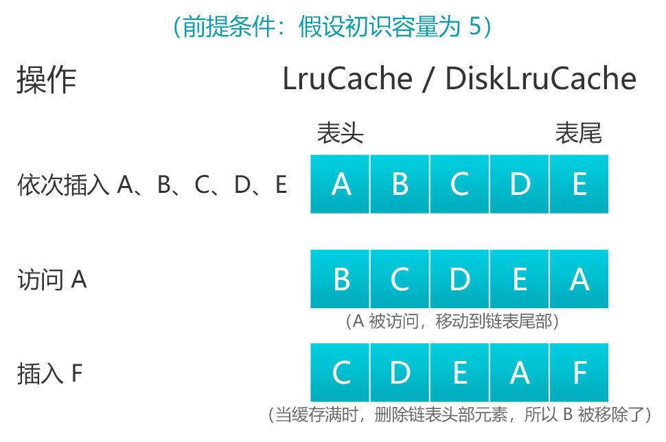

前言
最近有个想法——就是把 Android 主流开源框架进行深入分析，然后写成一系列文章，包括该框架的详细使用与源码解析。目的是通过鉴赏大神的源码来了解框架底层的原理，也就是做到不仅要知其然，还要知其所以然。
这里我说下自己阅读源码的经验，我一般都是按照平时使用某个框架或者某个系统源码的使用流程入手的，首先要知道怎么使用，然后再去深究每一步底层做了什么，用了哪些好的设计模式，为什么要这么设计。
系列文章：
- Android 主流开源框架（一）OkHttp 铺垫-HttpClient 与 HttpURLConnection 使用详解
- Android 主流开源框架（二）OkHttp 使用详解
- Android 主流开源框架（三）OkHttp 源码解析
- Android 主流开源框架（四）Retrofit 使用详解
- Android 主流开源框架（五）Retrofit 源码解析
- Android 主流开源框架（六）Glide 的执行流程源码解析
- Android 主流开源框架（七）Glide 的缓存机制
- 更多框架持续更新中…
更多干货请关注 AndroidNotes
上一篇主要讲了 Glide 的执行流程，当时是禁用了内存与磁盘缓存的，所以涉及到缓存相关的流程都省略了，还没看上篇的建议先去看一遍，因为这篇讲的缓存机制很多都是要与上篇联系起来的。
一、Glide 中的缓存
默认情况下，Glide 在加载图片之前会依次检查是否有以下缓存：
- 活动资源 (Active Resources)：正在使用的图片
- 内存缓存 (Memory cache)：内存缓存中的图片
- 资源类型（Resource）：磁盘缓存中转换过后的图片
- 数据来源 (Data)：磁盘缓存中的原始图片
也就是说 Glide 中实际有四级缓存，前两个属于内存缓存，后两个属于磁盘缓存。以上每步是按顺序检查的，检查到哪一步有缓存就直接返回图片，否则继续检查下一步。如果都没有缓存，则 Glide 会从原始资源（File、Uri、远程图片 url 等）中加载图片。
二、缓存 Key
缓存功能必然要有一个唯一的缓存 Key 用来存储和查找对应的缓存数据。那么下面我们就看下 Glide 的缓存 Key 是怎么生成的。
其实上一篇文章中已经瞄过一眼了，是在 Engine 类的 load() 方法中生成的：
/*Engine*/
public <R> LoadStatus load(
GlideContext glideContext,
Object model,
Key signature,
int width,
int height,
Class<?> resourceClass,
Class<R> transcodeClass,
Priority priority,
DiskCacheStrategy diskCacheStrategy,
Map<Class<?>, Transformation<?>> transformations,
boolean isTransformationRequired,
boolean isScaleOnlyOrNoTransform,
Options options,
boolean isMemoryCacheable,
boolean useUnlimitedSourceExecutorPool,
boolean useAnimationPool,
boolean onlyRetrieveFromCache,
ResourceCallback cb,
Executor callbackExecutor) {
EngineKey key =
keyFactory.buildKey(
model,
signature,
width,
height,
transformations,
resourceClass,
transcodeClass,
options);
...
}继续跟进：
/*EngineKeyFactory*/
EngineKey buildKey(
Object model,
Key signature,
int width,
int height,
Map<Class<?>, Transformation<?>> transformations,
Class<?> resourceClass,
Class<?> transcodeClass,
Options options) {
return new EngineKey(
model, signature, width, height, transformations, resourceClass, transcodeClass, options);
}class EngineKey implements Key {
...
@Override
public boolean equals(Object o) {
if (o instanceof EngineKey) {
EngineKey other = (EngineKey) o;
return model.equals(other.model)
&& signature.equals(other.signature)
&& height == other.height
&& width == other.width
&& transformations.equals(other.transformations)
&& resourceClass.equals(other.resourceClass)
&& transcodeClass.equals(other.transcodeClass)
&& options.equals(other.options);
}
return false;
}
@Override
public int hashCode() {
if (hashCode == 0) {
hashCode = model.hashCode();
hashCode = 31 * hashCode + signature.hashCode();
hashCode = 31 * hashCode + width;
hashCode = 31 * hashCode + height;
hashCode = 31 * hashCode + transformations.hashCode();
hashCode = 31 * hashCode + resourceClass.hashCode();
hashCode = 31 * hashCode + transcodeClass.hashCode();
hashCode = 31 * hashCode + options.hashCode();
}
return hashCode;
}
...
}可以看到，这里传入了 model（File、Uri、远程图片 url 等）、签名、宽高（这里的宽高是指显示图片的 View 的宽高，不是图片的宽高）等参数，然后通过 EngineKeyFactory 构建了一个 EngineKey 对象（即缓存 Key），然后 EngineKey 通过重写 equals() 与 hashCode() 方法来保证缓存 Key 的唯一性。
虽然决定缓存 Key 的参数很多，但是加载图片的代码写好后这些参数都是不会变的。很多人遇到的 “服务器返回的图片变了，但是前端显示的还是以前的图片” 的问题就是这个原因，因为虽然服务器返回的图片变了，但是图片 url 还是以前那个，其他决定缓存 Key 的参数也不会变，Glide 就认为有该缓存，就会直接从缓存中获取，而不是重新下载，所以显示的还是以前的图片。
对于这个问题，有几种方法可以解决，分别如下：
（1）图片 url 不要固定
也就是说如果某个图片改变了，那么该图片的 url 也要跟着改变。
（2）使用 signature() 更改缓存 Key
我们刚刚知道了决定缓存 Key 的参数包括 signature，刚好 Glide 提供了 signature() 方法来更改该参数。具体如下：
Glide.with(this).load(url).signature(new ObjectKey(timeModified)).into(imageView);其中 timeModified 可以是任意数据，这里用图片的更改时间。例如图片改变了，那么服务器应该改变该字段的值，然后随图片 url 一起返回给前端，这样前端加载的时候就知道图片改变了，需要重新下载。
（3）禁用缓存
前端加载图片的时候设置禁用内存与磁盘缓存，这样每次加载都会重新下载最新的。
Glide.with(this)
.load(url)
.skipMemoryCache(true) // 禁用内存缓存
.diskCacheStrategy(DiskCacheStrategy.NONE) // 禁用磁盘缓存
.into(imageView);以上 3 种方法都可以解决问题，但是推荐使用第一种，这样设计是比较规范的，后台人员就应该这么设计。第二种方法也可以，但是这样无疑是给后端、前端人员都增加了麻烦。第三种是最不推荐的，相当于舍弃了缓存功能，每次都要从服务器重新下载图片，不仅浪费用户流量，而且每次加载需要等待也影响用户体验。
三、缓存策略
在讲 Glide 中的内存缓存与磁盘缓存之前，我们先了解下缓存策略。例如加载一张图片显示到设备上的缓存策略应该这样设计：
当程序第一次从网络上加载图片后，就将它缓存到设备磁盘中，下次使用这张图片的时候就不用再从网络上加载了。为了提升用户体验，往往还会在内存中缓存一份，因为从内存中加载图片比从磁盘中加载要快。程序下次加载这张图片的时候首先从内存中查找，如果没有就去磁盘中查找，都没有才从网络上加载。
这里的缓存策略涉及到缓存的添加、获取和删除操作，什么时候进行这些操作等逻辑就构成了一种缓存算法。目前常用的一种缓存算法是 LRU（Least Recently Used），即最近最少使用算法。它的核心思想是当缓存满时，会优先淘汰那些最近最少使用的缓存对象。采用 LRU 算法的缓存有两种：LruCache 和 DiskLruCache，LruCache 用于实现内存缓存，DiskLruCache 则用于实现磁盘缓存，两者结合使用就可以实现上面的缓存策略。
根据上面的描述，LRU 算法可以用如下流程图（图片来自 Android开源框架源码鉴赏：LruCache与DiskLruCache）表示：

LruCache 和 DiskLruCache 的内部算法原理是采用一个 LinkedHashMap 以强引用的方式存储外界的缓存对象，其提供了 get() 和 put() 方法来完成缓存的获取和添加的操作。当缓存满时，会移除较早使用的缓存对象，然后再添加新的缓存对象。
下面要讲的 Glide 中的内存缓存与磁盘缓存也是用的 LruCache 和 DiskLruCache，只不过 LruCache 用的不是 SDK 中的，而是自己写的，但是看了原理其实是一样的。而 DiskLruCache 用的是 JakeWharton 封装的 DiskLruCache。
四、内存缓存
Glide 默认是配置了内存缓存的，当然 Glide 也提供了 API 给我们开启和禁用，如下：
// 开启内存缓存
Glide.with(this).load(url).skipMemoryCache(false).into(imageView);
// 禁用内存缓存
Glide.with(this).load(url).skipMemoryCache(true).into(imageView);文章开头说了，Glide 在加载图片之前会依次检查四级缓存。现在缓存 Key 也拿到了，那么我们先看看前两级中的内存缓存是怎么获取的（下面分析的时候需要用默认加载语句或者手动开启内存缓存）。从上一篇文章知道，获取内存缓存的代码也是在 Engine 类的 load() 方法中，我们进去看看：
/*Engine*/
public <R> LoadStatus load(...) {
// 构建缓存 Key
EngineKey key =
keyFactory.buildKey(
model,
signature,
width,
height,
transformations,
resourceClass,
transcodeClass,
options);
EngineResource<?> memoryResource;
synchronized (this) {
// 从内存中加载缓存数据
memoryResource = loadFromMemory(key, isMemoryCacheable, startTime);
...
}
// 加载完成回调
cb.onResourceReady(memoryResource, DataSource.MEMORY_CACHE);
return null;
}继续点击 loadFromMemory() 方法进去看看：
/*Engine*/
private EngineResource<?> loadFromMemory(
EngineKey key, boolean isMemoryCacheable, long startTime) {
if (!isMemoryCacheable) {
return null;
}
//（1）
EngineResource<?> active = loadFromActiveResources(key);
if (active != null) {
if (VERBOSE_IS_LOGGABLE) {
logWithTimeAndKey("Loaded resource from active resources", startTime, key);
}
return active;
}
//（2）
EngineResource<?> cached = loadFromCache(key);
if (cached != null) {
if (VERBOSE_IS_LOGGABLE) {
logWithTimeAndKey("Loaded resource from cache", startTime, key);
}
return cached;
}
return null;
}这里我标记了两个关注点，分别如下：
- （1）：表示从 ActiveResources 中加载缓存数据。
- （2）：表示从内存缓存中加载缓存数据。
是的，这就是 Glide 四级缓存中的前两级。ActiveResources 里面主要包含了一个 HashMap 的相关操作，然后 HashMap 中保存的值又是弱引用来引用的，也就是说这里是采用一个弱引用的 HashMap 来缓存活动资源。下面我们分析下这两个关注点：
Engine#loadFromMemory() 中的关注点（1）
我们点击关注点（1）看看：/*Engine*/ private EngineResource<?> loadFromActiveResources(Key key) { EngineResource<?> active = activeResources.get(key); if (active != null) { active.acquire(); } return active; }
继续看 get() 方法：
/*ActiveResources*/
synchronized EngineResource<?> get(Key key) {
// 从 HashMap 中获取 ResourceWeakReference
ResourceWeakReference activeRef = activeEngineResources.get(key);
if (activeRef == null) {
return null;
}
// 从弱引用中获取活动资源
EngineResource<?> active = activeRef.get();
if (active == null) {
cleanupActiveReference(activeRef);
}
return active;
}可以看到，这里首先从 HashMap 中获取 ResourceWeakReference（继承了弱引用），然后从弱引用中获取了活动资源（获取活动资源），即正在使用的图片。也就是说正在使用的图片实际是通过弱引用维护，然后保存在 HashMap 中的。
继续看 acquire() 方法：
/*EngineResource*/
synchronized void acquire() {
if (isRecycled) {
throw new IllegalStateException("Cannot acquire a recycled resource");
}
++acquired;
}发现这里是将 acquired 变量 +1，这个变量用来记录图片被引用的次数。该变量除了 acquire() 方法中做了 +1 操作，还在 release() 方法中做了 -1 的操作，如下：
/*EngineResource*/
void release() {
boolean release = false;
synchronized (this) {
if (acquired <= 0) {
throw new IllegalStateException("Cannot release a recycled or not yet acquired resource");
}
if (--acquired == 0) {
release = true;
}
}
if (release) {
listener.onResourceReleased(key, this);
}
}
/*Engine*/
@Override
public void onResourceReleased(Key cacheKey, EngineResource<?> resource) {
activeResources.deactivate(cacheKey);
if (resource.isMemoryCacheable()) {
cache.put(cacheKey, resource);
} else {
resourceRecycler.recycle(resource, /*forceNextFrame=*/ false);
}
}
/*ActiveResources*/
synchronized void deactivate(Key key) {
ResourceWeakReference removed = activeEngineResources.remove(key);
if (removed != null) {
removed.reset();
}
}可以看到，当 acquired 减到 0 的时候，又回调了 Engine#onResourceReleased()。在 onResourceReleased() 方法中首先将活动资源从弱引用的 HashMap 中移除（清理活动资源），然后将它缓存到内存缓存中（存储内存缓存）。
也就是说，release() 方法主要是释放资源。当我们从一屏滑动到下一屏的时候，上一屏的图片就会看不到，这个时候就会调用该方法。还有我们关闭当前显示图片的页面时会调用 onDestroy() 方法，最终也会调用该方法。这两种情况很明显是不需要用到该图片了，那么理所当然的会调用 release() 方法来释放弱引用的 HashMap 中缓存的活动资源。
这样也就实现了正在使用中的图片使用弱引用来进行缓存，不在使用中的图片使用 LruCache 来进行缓存的功能。
- Engine#loadFromMemory() 中的关注点（2）
我们点击关注点（2）看看：/*Engine*/ private EngineResource<?> loadFromCache(Key key) { //（2.1） EngineResource<?> cached = getEngineResourceFromCache(key); if (cached != null) { //（2.2） cached.acquire(); //（2.3） activeResources.activate(key, cached); } return cached; }
这里我标注了 3 个关注点，分别如下：
（2.1）：这里是获取内存缓存。点进去看看：
/*Engine*/ private EngineResource<?> getEngineResourceFromCache(Key key) { Resource<?> cached = cache.remove(key); final EngineResource<?> result; if (cached == null) { result = null; } else if (cached instanceof EngineResource) { // Save an object allocation if we've cached an EngineResource (the typical case). result = (EngineResource<?>) cached; } else { result = new EngineResource<>( cached, /*isMemoryCacheable=*/ true, /*isRecyclable=*/ true, key, /*listener=*/ this); } return result; }
可以看到，这里的 cache 就是 LruResourceCache，remove() 操作就是移除缓存的同时获取该缓存（获取内存缓存）。LruResourceCache 继承了 LruCache，虽然不是 SDK 中的 LruCache，但是看了原理其实是一样的，也就是说内存缓存使用的是 LRU 算法实现的。
- （2.2）：与关注点（1）中的获取活动资源一样，也是将 acquired 变量 +1，然后用来记录图片被引用的次数。
- （2.3）：将内存中获取的缓存数据缓存到弱引用的 HashMap 中。
再回去看我标记了高亮的文字，发现这 2 个关注点主要做了获取活动资源、清理活动资源、获取内存缓存、存储内存缓存。其中清理内存缓存的操作 LRU 算法已经自动帮我们实现了，那是不是发现少了存储活动资源的步骤？
活动资源是哪里来的呢？其实就是我们从网络请求中返回的数据。从上一篇文章（可以回去搜索 onEngineJobComplete() 回忆下上下文）可以知道网络请求回来后先进行解码，然后在 Engine#onEngineJobComplete() 方法中进行了活动资源的存储，我再贴下代码：
/*Engine*/
@Override
public synchronized void onEngineJobComplete(
EngineJob<?> engineJob, Key key, EngineResource<?> resource) {
// A null resource indicates that the load failed, usually due to an exception.
if (resource != null && resource.isMemoryCacheable()) {
activeResources.activate(key, resource);
}
jobs.removeIfCurrent(key, engineJob);
}
/*ActiveResources*/
synchronized void activate(Key key, EngineResource<?> resource) {
ResourceWeakReference toPut =
new ResourceWeakReference(
key, resource, resourceReferenceQueue, isActiveResourceRetentionAllowed);
// 存储活动资源
ResourceWeakReference removed = activeEngineResources.put(key, toPut);
if (removed != null) {
removed.reset();
}
}以上就是 Glide 内存缓存的原理，但是我们发现除了利用 LruCache 实现的内存缓存，还有一个是利用弱引用的 HashMap 实现的。一般如果让我们设计，可能就只会想到用 LruCache 实现内存缓存。那这里设计多一个弱引用的 HashMap 的好处是什么呢？
郭霖的深入探究Glide的缓存机制中是这样描述的使用activeResources来缓存正在使用中的图片，可以保护这些图片不会被LruCache算法回收掉。我觉得这样解释不太合理，我看完源码并没有觉得这个弱引用的 HashMap 起到了 “保护图片不被 LRU 算法回收” 的作用。我觉得有如下作用（如有不对请指出）：
（1）提高访问效率
因为 ActiveResources 用的是 HashMap，而 LruCache 用的是 LinkedHashMap，并且在实例化 LinkedHashMap 时是设置了访问顺序的（如下设置），所以 HashMap 的访问速度是要比 LinkedHashMap 快的。
// accessOrder 设置为 true，表示是访问顺序模式
Map<T, Y> cache = new LinkedHashMap<>(100, 0.75f, true);（2）防止内存泄漏
ActiveResources 中的 HashMap 是弱引用维护的，而 LruCache 中的 LinkedHashMap 用的是强引用。因为弱引用对象会随时被 gc 回收，所以可以防止内存泄漏。这里列举下各种引用的区别：
- 强引用：直接的对象引用。
- 软引用：当一个对象只有软引用存在时，系统内存不足时此对象会被 gc 回收。
- 弱引用：当一个对象只有弱引用存在时, 此对象会随时被 gc 回收。
五、磁盘缓存
5.1 磁盘缓存策略
前面说了禁用缓存只需要如下设置即可：
Glide.with(this).load(url).diskCacheStrategy(DiskCacheStrategy.NONE).into(imageView);上面的 DiskCacheStrategy 封装的是磁盘缓存策略，一共有如下几种策略：
- ALL：既缓存原始图片，也缓存转换过后的图片。
- NONE：不缓存任何内容。
- DATA：只缓存原始图片。
- RESOURCE：只缓存转换过后的图片。
- AUTOMATIC：默认策略，它会尝试对本地和远程图片使用最佳的策略。如果是远程图片，则只缓存原始图片；如果是本地图片，那么只缓存转换过后的图片。
其实 5 种策略总结起来对应的就是文章开头说的后两级缓存，即资源类型（Resource）与 数据来源（Data），下面通过源码来分析下它们是在哪里获取、存储和清理缓存的。
5.2 资源类型（Resource）
该级缓存只缓存转换过后的图片，那么我们需要先配置如下策略：
Glide.with(this).load(url).diskCacheStrategy(DiskCacheStrategy.RESOURCE).into(imageView);通过上一篇文章可知，当我们从主线程切换到子线程去执行请求的时候用到了磁盘缓存策略，那么我们这里直接从 DecodeJob 任务的 run() 方法开始分析：
/*DecodeJob*/
@Override
public void run() {
...
try {
// 执行
runWrapped();
} catch (CallbackException e) {
throw e;
}
...
}继续 runWrapped() 方法：
/*DecodeJob*/
private void runWrapped() {
switch (runReason) {
case INITIALIZE:
// 1. 获取资源状态
stage = getNextStage(Stage.INITIALIZE);
// 2. 根据资源状态获取资源执行器
currentGenerator = getNextGenerator();
// 3. 执行
runGenerators();
break;
case SWITCH_TO_SOURCE_SERVICE:
runGenerators();
break;
case DECODE_DATA:
decodeFromRetrievedData();
break;
default:
throw new IllegalStateException("Unrecognized run reason: " + runReason);
}
}
/*DecodeJob*/
private Stage getNextStage(Stage current) {
switch (current) {
case INITIALIZE:
return diskCacheStrategy.decodeCachedResource()
? Stage.RESOURCE_CACHE
: getNextStage(Stage.RESOURCE_CACHE);
case RESOURCE_CACHE:
return diskCacheStrategy.decodeCachedData()
? Stage.DATA_CACHE
: getNextStage(Stage.DATA_CACHE);
case DATA_CACHE:
// Skip loading from source if the user opted to only retrieve the resource from cache.
return onlyRetrieveFromCache ? Stage.FINISHED : Stage.SOURCE;
case SOURCE:
case FINISHED:
return Stage.FINISHED;
default:
throw new IllegalArgumentException("Unrecognized stage: " + current);
}
}
/*DecodeJob*/
private DataFetcherGenerator getNextGenerator() {
switch (stage) {
case RESOURCE_CACHE:
return new ResourceCacheGenerator(decodeHelper, this);
case DATA_CACHE:
return new DataCacheGenerator(decodeHelper, this);
case SOURCE:
return new SourceGenerator(decodeHelper, this);
case FINISHED:
return null;
default:
throw new IllegalStateException("Unrecognized stage: " + stage);
}
}这里会根据缓存策略获取到资源状态，然后再根据资源状态获取资源执行器，最后调用 runGenerators() 方法：
/*DecodeJob*/
private void runGenerators() {
currentThread = Thread.currentThread();
startFetchTime = LogTime.getLogTime();
boolean isStarted = false;
while (!isCancelled
&& currentGenerator != null
&& !(isStarted = currentGenerator.startNext())) {
stage = getNextStage(stage);
currentGenerator = getNextGenerator();
if (stage == Stage.SOURCE) {
reschedule();
return;
}
}
}可以看到，该方法中会调用当前执行器的 startNext() 方法，因为我们配置的缓存策略是 RESOURCE，所以这里直接看 ResourceCacheGenerator 的 startNext() 方法：
/*ResourceCacheGenerator*/
@Override
public boolean startNext() {
...
while (modelLoaders == null || !hasNextModelLoader()) {
...
//（1）
currentKey =
new ResourceCacheKey(
helper.getArrayPool(),
sourceId,
helper.getSignature(),
helper.getWidth(),
helper.getHeight(),
transformation,
resourceClass,
helper.getOptions());
//（2）
cacheFile = helper.getDiskCache().get(currentKey);
if (cacheFile != null) {
sourceKey = sourceId;
modelLoaders = helper.getModelLoaders(cacheFile);
modelLoaderIndex = 0;
}
}
loadData = null;
boolean started = false;
while (!started && hasNextModelLoader()) {
ModelLoader<File, ?> modelLoader = modelLoaders.get(modelLoaderIndex++);
loadData =
modelLoader.buildLoadData(
cacheFile, helper.getWidth(), helper.getHeight(), helper.getOptions());
if (loadData != null && helper.hasLoadPath(loadData.fetcher.getDataClass())) {
started = true;
//（3）
loadData.fetcher.loadData(helper.getPriority(), this);
}
}
return started;
}可以看到，根据我标记的关注点这里首先构建缓存 Key，然后根据缓存 Key 去获取缓存文件（获取转换后的图片），最后将缓存文件加载成需要的数据。其中 helper.getDiskCache() 为 DiskLruCacheWrapper，内部是通过 DiskLruCache 操作的，也就是说这一级的磁盘缓存使用的是 LRU 算法实现的。
因为获取的是缓存文件，所以这里的 loadData.fetcher 实际为 ByteBufferFileLoader，继续看 ByteBufferFileLoader#(loadData):
/*ByteBufferFileLoader*/
@Override
public void loadData(
@NonNull Priority priority, @NonNull DataCallback<? super ByteBuffer> callback) {
ByteBuffer result;
try {
result = ByteBufferUtil.fromFile(file);
} catch (IOException e) {
if (Log.isLoggable(TAG, Log.DEBUG)) {
Log.d(TAG, "Failed to obtain ByteBuffer for file", e);
}
callback.onLoadFailed(e);
return;
}
callback.onDataReady(result);
}这里主要是将缓存文件转换成 ByteBuffer，然后通过 onDataReady() 方法回调出去，最终回调到 DecodeJob 的 onDataFetcherReady() 方法中，后面的流程就跟上一篇文章差不多了。
上面是获取缓存的流程，那么是哪里存储缓存的呢？我们可以用反推的方法，刚刚获取缓存 Key 的时候用的是 ResourceCacheKey，那么存储缓存与获取缓存肯定都是用的 ResourceCacheKey，经过查找发现除了 ResourceCacheGenerator，只有在 DecodeJob 的 onResourceDecoded() 方法中使用到：
/*DecodeJob*/
<Z> Resource<Z> onResourceDecoded(DataSource dataSource, @NonNull Resource<Z> decoded) {
...
boolean isFromAlternateCacheKey = !decodeHelper.isSourceKey(currentSourceKey);
if (diskCacheStrategy.isResourceCacheable(
isFromAlternateCacheKey, dataSource, encodeStrategy)) {
if (encoder == null) {
throw new Registry.NoResultEncoderAvailableException(transformed.get().getClass());
}
final Key key;
//（1）
switch (encodeStrategy) {
case SOURCE:
key = new DataCacheKey(currentSourceKey, signature);
break;
case TRANSFORMED:
key =
new ResourceCacheKey(
decodeHelper.getArrayPool(),
currentSourceKey,
signature,
width,
height,
appliedTransformation,
resourceSubClass,
options);
break;
default:
throw new IllegalArgumentException("Unknown strategy: " + encodeStrategy);
}
LockedResource<Z> lockedResult = LockedResource.obtain(transformed);
//（2）
deferredEncodeManager.init(key, encoder, lockedResult);
result = lockedResult;
}
return result;
}内部又调用了 init() 方法：
private static class DeferredEncodeManager<Z> {
private Key key;
private ResourceEncoder<Z> encoder;
private LockedResource<Z> toEncode;
<X> void init(Key key, ResourceEncoder<X> encoder, LockedResource<X> toEncode) {
this.key = key;
this.encoder = (ResourceEncoder<Z>) encoder;
this.toEncode = (LockedResource<Z>) toEncode;
}
void encode(DiskCacheProvider diskCacheProvider, Options options) {
GlideTrace.beginSection("DecodeJob.encode");
try {
//（3）
diskCacheProvider
.getDiskCache()
.put(key, new DataCacheWriter<>(encoder, toEncode, options));
} finally {
toEncode.unlock();
GlideTrace.endSection();
}
}
}可以看到，根据我标记的关注点这里首先根据缓存策略构建不同的缓存 Key，然后调用 DeferredEncodeManager 的 init() 方法给变量 key 赋值，然后 key 又在 encode() 方法中使用了，该方法中就做了存储缓存的操作（存储转换后的图片）。
那么我们现在看看 encode() 方法在哪里被调用了呗，点击发现只在 DecodeJob 的 notifyEncodeAndRelease() 方法中被调用了：
/*DecodeJob */
private void notifyEncodeAndRelease(Resource<R> resource, DataSource dataSource) {
if (resource instanceof Initializable) {
((Initializable) resource).initialize();
}
Resource<R> result = resource;
LockedResource<R> lockedResource = null;
if (deferredEncodeManager.hasResourceToEncode()) {
lockedResource = LockedResource.obtain(resource);
result = lockedResource;
}
notifyComplete(result, dataSource);
stage = Stage.ENCODE;
try {
if (deferredEncodeManager.hasResourceToEncode()) {
// 将资源缓存到磁盘
deferredEncodeManager.encode(diskCacheProvider, options);
}
} finally {
if (lockedResource != null) {
lockedResource.unlock();
}
}
// Call onEncodeComplete outside the finally block so that it's not called if the encode process
// throws.
onEncodeComplete();
}notifyEncodeAndRelease() 方法是我们上一篇文章中讲的解码完成了通知下去的步骤，也就是说第一次加载的时候在 SourceGenerator#startNext() 中请求到数据，然后解码完成，最后再存储缓存。
上面已经实现了转换后的图片的获取、存储，剩下的清理操作 LRU 算法已经自动帮我们实现了。接下来继续看下原始图片是怎么获取、存储与清理的。
5.3 数据来源（Data）
该级缓存只缓存原始图片，那么我们需要先配置如下策略：
Glide.with(this).load(url).diskCacheStrategy(DiskCacheStrategy.DATA).into(imageView);与资源类型一样，只不过这里缓存策略换成了 DATA，所以前面就不讲了，我们直接看 DataCacheGenerator 的 startNext() 方法：
/*DataCacheGenerator*/
@Override
public boolean startNext() {
while (modelLoaders == null || !hasNextModelLoader()) {
...
//（1）
Key originalKey = new DataCacheKey(sourceId, helper.getSignature());
//（2）
cacheFile = helper.getDiskCache().get(originalKey);
if (cacheFile != null) {
this.sourceKey = sourceId;
modelLoaders = helper.getModelLoaders(cacheFile);
modelLoaderIndex = 0;
}
}
loadData = null;
boolean started = false;
while (!started && hasNextModelLoader()) {
ModelLoader<File, ?> modelLoader = modelLoaders.get(modelLoaderIndex++);
loadData =
modelLoader.buildLoadData(
cacheFile, helper.getWidth(), helper.getHeight(), helper.getOptions());
if (loadData != null && helper.hasLoadPath(loadData.fetcher.getDataClass())) {
started = true;
//（3）
loadData.fetcher.loadData(helper.getPriority(), this);
}
}
return started;
}可以看到，根据我标记的关注点这里首先构建缓存 Key，然后根据缓存 Key 去获取缓存文件（获取原始图片），最后将缓存文件加载成需要的数据。与资源类型一样，这里的 helper.getDiskCache() 也为 DiskLruCacheWrapper，所以这一级的磁盘缓存使用的也是 LRU 算法实现的。
这里获取的同样是缓存文件，所以这里的 loadData.fetcher 也为 ByteBufferFileLoader，最终也是回调到 DecodeJob 的 onDataFetcherReady() 方法中。
那么是哪里存储缓存的呢？同样用反推的方法，但是发现除了 DataCacheGenerator 还有两个地方用到了。
第一个与资源类型一样是在 DecodeJob#onResourceDecoded()：
/*DecodeJob*/
<Z> Resource<Z> onResourceDecoded(DataSource dataSource, @NonNull Resource<Z> decoded) {
...
boolean isFromAlternateCacheKey = !decodeHelper.isSourceKey(currentSourceKey);
//（1）
if (diskCacheStrategy.isResourceCacheable(
isFromAlternateCacheKey, dataSource, encodeStrategy)) {
if (encoder == null) {
throw new Registry.NoResultEncoderAvailableException(transformed.get().getClass());
}
final Key key;
switch (encodeStrategy) {
case SOURCE:
key = new DataCacheKey(currentSourceKey, signature);
break;
case TRANSFORMED:
key =
new ResourceCacheKey(
decodeHelper.getArrayPool(),
currentSourceKey,
signature,
width,
height,
appliedTransformation,
resourceSubClass,
options);
break;
default:
throw new IllegalArgumentException("Unknown strategy: " + encodeStrategy);
}
LockedResource<Z> lockedResult = LockedResource.obtain(transformed);
deferredEncodeManager.init(key, encoder, lockedResult);
result = lockedResult;
}
return result;
}这里的关注点（1）做了一个缓存策略的判断，因为前面配置的缓存策略是 DATA，所以这里调用的是 DATA 中的 isResourceCacheable() 方法：
/*DiskCacheStrategy*/
public static final DiskCacheStrategy DATA =
new DiskCacheStrategy() {
@Override
public boolean isDataCacheable(DataSource dataSource) {
return dataSource != DataSource.DATA_DISK_CACHE && dataSource != DataSource.MEMORY_CACHE;
}
// 调用的是该方法
@Override
public boolean isResourceCacheable(
boolean isFromAlternateCacheKey, DataSource dataSource, EncodeStrategy encodeStrategy) {
return false;
}
@Override
public boolean decodeCachedResource() {
return false;
}
@Override
public boolean decodeCachedData() {
return true;
}
};可以看到，isResourceCacheable() 方法始终返回 false，所以上面关注点（1）是进不去的，可以排除。
那我们继续看下另一个地方用到的：
/*SourceGenerator*/
private void cacheData(Object dataToCache) {
long startTime = LogTime.getLogTime();
try {
Encoder<Object> encoder = helper.getSourceEncoder(dataToCache);
DataCacheWriter<Object> writer =
new DataCacheWriter<>(encoder, dataToCache, helper.getOptions());
//（1）
originalKey = new DataCacheKey(loadData.sourceKey, helper.getSignature());
//（2）
helper.getDiskCache().put(originalKey, writer);
...
} finally {
loadData.fetcher.cleanup();
}
sourceCacheGenerator =
new DataCacheGenerator(Collections.singletonList(loadData.sourceKey), helper, this);
}这里首先构建缓存 Key，然后存储缓存（存储原始图片）。而该方法是在 SourceGenerator#startNext() 中调用的：
/*SourceGenerator*/
@Override
public boolean startNext() {
//（1）
if (dataToCache != null) {
Object data = dataToCache;
dataToCache = null;
cacheData(data);
}
if (sourceCacheGenerator != null && sourceCacheGenerator.startNext()) {
return true;
}
sourceCacheGenerator = null;
loadData = null;
boolean started = false;
while (!started && hasNextModelLoader()) {
loadData = helper.getLoadData().get(loadDataListIndex++);
if (loadData != null
&& (helper.getDiskCacheStrategy().isDataCacheable(loadData.fetcher.getDataSource())
|| helper.hasLoadPath(loadData.fetcher.getDataClass()))) {
started = true;
startNextLoad(loadData);
}
}
return started;
}可以看到，关注点（1）中首先判断缓存不为空才进行缓存数据的操作，那我们看下 dataToCache 是哪里被赋值了呗，查找发现只有在 SourceGenerator#onDataReadyInternal() 中赋值过：
/*SourceGenerator*/
void onDataReadyInternal(LoadData<?> loadData, Object data) {
DiskCacheStrategy diskCacheStrategy = helper.getDiskCacheStrategy();
if (data != null && diskCacheStrategy.isDataCacheable(loadData.fetcher.getDataSource())) {
// 赋值
dataToCache = data;
// We might be being called back on someone else's thread. Before doing anything, we should
// reschedule to get back onto Glide's thread.
// 回调
cb.reschedule();
} else {
cb.onDataFetcherReady(
loadData.sourceKey,
data,
loadData.fetcher,
loadData.fetcher.getDataSource(),
originalKey);
}
}可以看到，onDataReadyInternal() 方法又是我们熟悉的，也就是上一篇文章中加载完数据后调用的。上一篇文章是因为禁用了缓存，所以走的是 else。这里配置的缓存策略是 DATA，所以自然走的是 if。
那么赋值完成，下一步肯定要用到，我们继续跟这里的回调方法，发现调用的是 EngineJob 的 reschedule() 方法：
/*EngineJob*/
@Override
public void reschedule(DecodeJob<?> job) {
getActiveSourceExecutor().execute(job);
}这里又用线程池执行了 DecodeJob，所以最后又回到了 SourceGenerator 的 startNext() 方法，这时候 dataToCache 就不是空了，所以就将数据缓存起来了。其实 cacheData() 方法中存储缓存的时候还构建了一个 DataCacheGenerator，然后存储完成又执行了 DataCacheGenerator#startNext()，这里再从磁盘获取缓存后才将图片显示到控件上，也就是说网络请求拿到数据后是先缓存数据，然后再从磁盘获取缓存才显示到控件上。
同理，原始图片的清理操作也是 LRU 算法自动帮我们实现了。
可以看到，这里资源类型（Resource）与数据来源（Data）中存储缓存的步骤我都是利用缓存 Key 去反推得出数据是哪里缓存的。有时候适当的利用反推是挺方便的，如果你不习惯利用反推，可以跟着程序走，也就是网络请求到数据后再一步步跟着去看是哪里缓存的。
六、总结
通过分析 Glide 的缓存机制，发现设计的确实精妙。利用四级缓存大大提高了图片的加载效率，磁盘缓存策略也提升了框架的灵活性，如果让我们设计一个图片加载框架，完全可以将 Glide 中的这些优点用上。
参考资料：